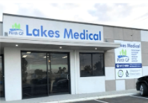

MyMedicare Registration
Scan the QR code to easily link Lakes Medical Centre as your preferred general practice under the national MyMedicare program.
LEARN MORE →Welcome to Lakes Medical Centre. Our friendly medical team provides trusted, patient-focused healthcare in a comfortable environment for every stage of life.
Please scan this QR code to register
for MyMedicare

From humble beginnings in South Lake, Perth GP has evolved to employ close to 500 staff. At its core, its values remain, with the group still owned and managed by doctors. We recognise what a privilege it is to be part of our patients' lives and at the heart of the community.
Lakes Medical is our flagship practice and is cherished by the residents of South Lake and its surrounds.
The practice continually strives to deliver high quality care that is accessible to all. It is through this hard work and dedication that the practice was awarded WA Practice of the Year 2018 by the Royal Australian College of General Practitioners.
All visits on Sundays and Public Holidays are privately billed. The charge applies even for patients under the age of 16 and patients who hold a valid Pension Card, Concession Card, Healthcare Card or DVA Card.
Please note that some procedures – Iron Infusion, Ear Syringing and Skin Lesions and Removal – are privately billed.
The practice has a treasured history of teaching and training and we are proud to support General Practice training as well as Medical and Nursing Student training.
Lakes Medical prides itself on our team philosophy and we appreciate the importance that a diversity of skills, cultural awareness and interests can have for a patient.
At Lakes Medical, you can rest assured that you are being looked after by a caring, skilled and dedicated team…
From routine check-ups to ongoing health management, we are here to support you and your family.
Scan the QR code to easily link Lakes Medical Centre as your preferred general practice under the national MyMedicare program.
LEARN MORE →Scan the QR code to request a doctor's appointment for TODAY, or call 1800 238 837 from 6:00pm on weeknights, 12 noon Saturday, and all day Sunday.
LEARN MORE →Submit your booking request online and our friendly triage staff will contact you promptly during opening hours to confirm your appointment.
BOOK NOW →We are committed to providing quality medical care in a welcoming, comfortable, and patient-focused environment.
Our team believes good healthcare starts with listening, understanding your needs, and working collaboratively on the best personalized care plan.